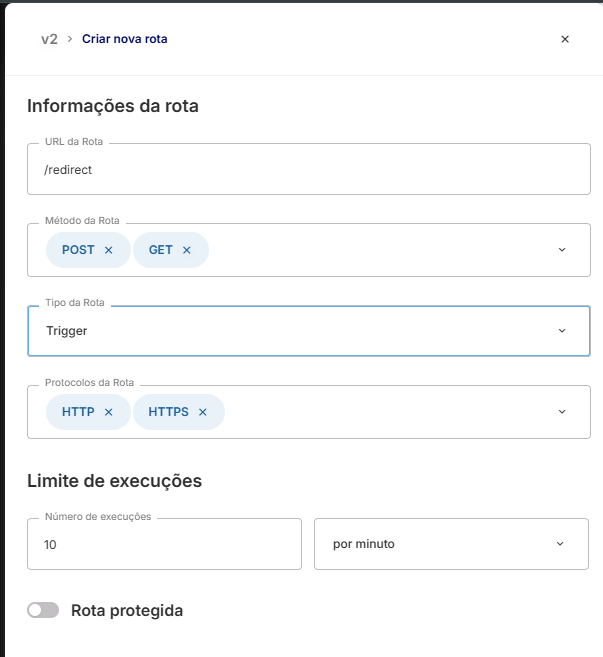
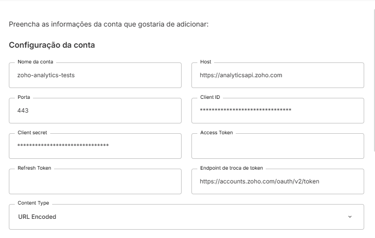
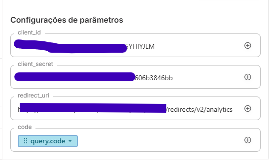
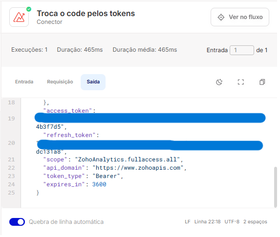
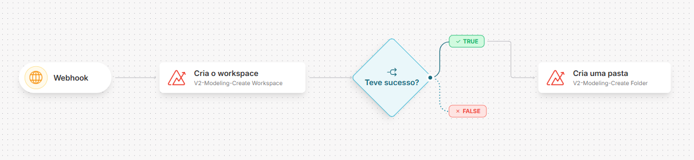
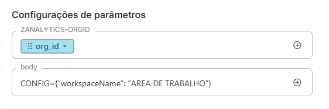

Zoho Analytics
Introdução
Este artigo detalha como configurar, autenticar e integrar a API do Zoho Analytics no Skyone Studio usando o template de módulo.
O que é a API do Zoho Analytics?
A API do Zoho Analytics utiliza uma arquitetura REST para permitir a interação programática com a plataforma de Business Intelligence (BI) e Analytics. A comunicação é realizada via protocolo HTTPS, com troca de dados padronizada no formato JSON e URLEncoded.
Principais capacidades:
Gestão de Dados em Lote (Bulk): Importação e exportação massiva de dados de forma assíncrona ou em lotes para alta performance. Modelagem de Dados Avançada: Criação e modificação de tabelas, colunas de fórmula, variáveis e tabelas de consulta SQL via API. Colaboração e Embedding: Controle fino de compartilhamento, gestão de grupos de usuários e geração de URLs para incorporação (embed) de relatórios e slideshows.
Conceitos Fundamentais
A estrutura do Zoho Analytics baseia-se nos seguintes pilares:
Estrutura de Dados e Hierarquia
Para manipular dados com sucesso, é fundamental compreender a hierarquia:
Workspace: O nível mais alto de organização, funcionando como um contêiner para todos os conjuntos de dados, relatórios e dashboards de um projeto. View: Refere-se a qualquer entidade de visualização ou armazenamento de dados dentro de um workspace, incluindo tabelas, relatórios, dashboards e tabelas de consulta.
Pré-requisitos e Configuração no Zoho Analytics
Para iniciar o desenvolvimento, são necessários:
Conta ativa no Zoho Analytics. Credenciais de Cliente: Obtidas na Zoho API Console.
Tipos de Autenticação suportados
A API suporta: OAuth 2.0.
Obtendo uma URL de Redirect
No Skyone Studio, acesse API Gateway, crie um Gateway e uma rota sem autenticação como essa:

Você pode ver a URL gerada inteira criando um fluxo e adicionando um gatilho de gateway
Obtendo as credenciais
- Acesse o Zoho API Console
- Clique em Add client e crie um nome identificável, junto da URL gerada na etapa anterior
A homepage URL é irrelevante para esse fluxo de integração, mas necessária para o Zoho, você pode inserir qualquer URL válida como https://google.com
- No client criado, acesse a aba Client Secret e anote o Client ID e o Client Secret exibidos
Configuração da conta no Skyone Studio
- No módulo conector, clique em Conta conectada e então em Criar conta conectada, adicione as seguintes informações.

Use o nome que preferir e preencha as credenciais de cliente com as informações reais criadas
- Crie uma integração e fluxo para resgatarmos o access_token e o refresh_token
- No fluxo, coloque o gatilho de API Gateway e selecione o gateway e rota criados anteriormente, insira um parâmetro de query com o nome "code"
- Insira no fluxo o conector do Zoho Analytics, escolha a operação OAuth-Get Access Token & Refresh Token, nos parâmetros preencha: o Client ID, o Client Secret e a redirect url (a mesma rota anterior). Em code, arraste o parâmetro query, clique na seta e digite ".code"

- Ative o fluxo e acesse a URL de autenticação do Zoho, veja o formato:
https://accounts.zoho.com/oauth/v2/auth?scope={scopes}&client_id={client_id}&response_type=code&access_type=offline&redirect_uri={redirect_uri}
Use a mesma redirect uri que foi utilizada até agora, scopes representam as permissões obtidas com o token, veja mais sobre eles em Scopes
- Ao final, você deve ser redirecionado para uma tela com um JSON indicando que seu fluxo foi executado, volte ao fluxo e acesse os logs, na ultima execução do módulo do Zoho Books deve constar:

Caso o refresh_token não apareça no log, certifique-se de ter adicionado access_type=offline na URL de autenticação. Se isso ocorrer após autenticações sucessivas, adicione prompt=consent na URL de autenticação.
- Adicione os tokens na configuração da conta e marque a caixa Enviar parâmetros de troca de token como query string.
Operações Disponíveis
Abaixo listamos as operações mapeadas neste conector.
| Nome da Operação | Método HTTP | Descrição da Função |
|---|---|---|
| V2-Bulk-Bulk Read-Async Export-Download Export Data | GET | Baixar arquivo exportado assíncrono. |
| V2-Metadata-Get Dashboards | GET | Recupera dashboards do recurso Metadata na versão 2. |
| V2-Metadata-Get Owned Dashboards | GET | Recupera todos os dashboards de propriedade do usuário autenticado. |
| V2-Metadata-Get Organizations | GET | Retorna detalhes da organização atual em Zoho Analytics. |
| V2-Bulk-Bulk Write-Import Data In New Table | POST | Importa dados em uma nova tabela via escrita em lote. |
| V2-Bulk-Bulk Write-Import Data In Existing Table | POST | Importa dados em massa para uma tabela já existente. |
| V2-Bulk-Bulk Read-Async Export-Create Export Job Using View ID | GET | Criar tarefa de exportação assíncrona usando ID da visualização. |
| V2-Bulk-Bulk Read-Async Export-Create Export Job Using SQL Query | GET | Crie job assíncrono de exportação usando SQL na rota /v2/bulk/read/async-export. |
| V2-Bulk-Bulk Read-Async Export-Get Export Job Details | GET | Recupera detalhes de uma tarefa assíncrona de exportação de dados em lote. |
| V2-Metadata-Get Trash Views | GET | Recupera visualizações de itens apagados. |
| V2-Bulk-Bulk Read-Export Data | GET | Exporta em lote todos os registros disponíveis na base de dados. |
| V2-Modeling-Create Workspace | POST | Cria um novo espaço de trabalho no modelo V2, configurando recursos e permissões. |
| V2-Modeling-Copy Workspace | POST | Duplica o workspace alvo. |
| V2-Modeling-Rename Workspace | PUT | Renomeia um workspace no modelo V2. |
| V2-Modeling-Delete Workspace | DELETE | Exclui um workspace no Zoho Analytics, removendo todos os objetos associados. |
| Authentication-Revoke Refresh Token | POST | Revoga o token de atualização para invalidar sessões futuras. |
| V2-Modeling-Create Table | POST | Cria uma nova tabela no modelo de dados de V2, definindo esquema e atributos. |
| V2-Bulk-Bulk Write-Import File In Existing Table | POST | Importa arquivo de dados para uma tabela já existente no sistema. |
| V2-Modeling-Edit Aggregate Formula | PUT | Edita fórmula agregada em V2/Modeling. |
| V2-Modeling-Get Variables Details | GET | Retorna detalhes de variáveis do modelo Zoho Analytics. |
| V2-Modeling-Create Variable | POST | Cria uma nova variável para o modelo de análise. |
| V2-Modeling-Update Variable | PUT | Atualiza o valor de uma variável no modelo. |
| V2-Modeling-Delete Variable | DELETE | Exclui uma variável de modelo. |
| V2-Modeling-Add Formula Column | POST | Adiciona coluna de fórmula personalizada a um modelo no Zoho Analytics. |
| V2-Modeling-Edit Formula Column | PUT | Atualiza coluna de fórmula personalizada. |
| V2-Modeling-Delete Formula Column | DELETE | Remover coluna de fórmula de um modelo de dados. |
| V2-Modeling-Add Aggregate Formula | POST | Adicionar fórmula agregada ao modelo de dados. |
| V2-Bulk-Bulk Write-Import File In New Table | POST | Importa dados de arquivo para nova tabela. |
| V2-Modeling-Delete Aggregate Formula | DELETE | Exclui uma fórmula agregada do modelo de dados. |
| V2-Metadata-Get All Workspaces | GET | Recupera todas as áreas de trabalho disponíveis na conta. |
| V2-Metadata-Get Owned Workspaces | GET | Lista workspaces pertencentes ao usuário autenticado. |
| V2-Metadata-Get Shared Workspaces | GET | Obtém lista de workspaces compartilhados. |
| V2-Metadata-Get Views | GET | Busca lista de visualizações de relatórios no Zoho Analytics. |
| V2-Metadata-Get Folders | GET | Lista pastas de metadados disponíveis no Zoho Analytics. |
| V2-Metadata-Get Recent Views | GET | Obtém lista de visualizações recentes. |
| V2-Modeling-Make Default Folder | PUT | Define a pasta padrão no modelo V2. |
| V2-Modeling-Show Columns | PUT | Lista colunas disponíveis em um modelo V2. |
| V2-Modeling-Hide Columns | PUT | Oculta colunas específicas no modelo V2. |
| V2-Modeling-Remove Lookup | DELETE | Remove um lookup existente na modelagem de dados do Zoho Analytics. |
| V2-Modeling-Add Lookup | POST | Adiciona um novo lookup ao modelo de dados. |
| V2-Modeling-Delete Column | DELETE | Exclui uma coluna especificada de um modelo na API de Modelagem V2. |
| V2-Modeling-Create Query Table | POST | Cria uma tabela de consultas com parâmetros de filtro e projeção. |
| V2-Modeling-Add Column | POST | Adiciona uma nova coluna a um modelo em modeling. |
| V2-Modeling-Delete Folder | DELETE | Deleta a pasta especificada na API V2/Modeling. |
| V2-Modeling-Copy Views | POST | Cria cópia de visualização dentro do modelo, replicando configurações e dados. |
| V2-Modeling-Rename Folder | PUT | Renomeia uma pasta no modelo de dados da versão 2 do Zoho Analytics. |
| V2-Modeling-Create Folder | POST | Cria uma nova pasta/modelo na camada de modelagem V2. |
| V2-Modeling-Delete Trash View | DELETE | Exclui permanentemente uma visualização da lixeira. |
| V2-Modeling-Restore Trash View | POST | Restaura visualizações excluídas da lixeira de modelagem. |
| V2-Modeling-Delete View | DELETE | Exclui uma visualização do modelo na API Zoho Analytics. |
| V2-Modeling-Rename View | PUT | Renomeia uma visualização existente na camada de modelagem. |
| V2-Modeling-Save As View | POST | Salvar visualização como modelo. |
| V2-Modeling-Edit Query Table | PUT | Editar tabela de consultas. |
| V2-Data-Add Row | POST | Adiciona uma linha de dados a um conjunto de dados do Zoho Analytics. |
| V2-Bulk-Bulk Write-Batch Import-Get Import Job Details | GET | Obtém detalhes do job de importação assíncrono. |
| V2-Bulk-Bulk Write-Batch Import-Import Data As Batches In Existing Table | POST | Importa dados em lotes para uma tabela existente. |
| V2-Bulk-Bulk Write-Batch Import-Import Data As Batches In New Table | POST | Importa dados em lotes para uma nova tabela. |
| V2-Bulk-Bulk Write-Async Import-Get Import Job Details | GET | Obtém detalhes do job de importação assíncrono. |
| V2-Bulk-Bulk Write-Async Import-Create Import Job In Existing Table | POST | Cria tarefa assíncrona de importação em tabela existente. |
| V2-Bulk-Bulk Write-Async Import-Create Import Job For New Table | POST | Cria uma tarefa assíncrona para importar dados em uma nova tabela. |
| V2-Data-Delete Row | DELETE | Exclui uma linha específica de uma tabela no Zoho Analytics via API v2. |
| V2-Data-Update Row | PUT | Atualiza dados de uma linha existente em V2/Data. |
| V2-Metadata-Get Shared Dashboards | GET | Recupera dashboards compartilhados de Zoho Analytics. |
| Authentication-Generate Tokens | POST | Gera os tokens de autenticação (OAuth). |
| V2-Modeling-Rename Column | PUT | Renomeia coluna em V2 / Modeling. |
| V2-Modeling-Get Variables | GET | Recupera as variáveis do workspace. |
| V2-Modeling-Auto Analyse Column | POST | Analisa automaticamente colunas para determinar tipo de dados. |
| V2-Modeling-Auto Analyse View | POST | Apresenta visão analítica automática do modelo. |
| V2-Modeling-Create Similar Views | POST | Cria visualizações semelhantes ao relatório especificado. |
| V2-Modeling-Copy Formulas | POST | Copia as fórmulas de um modelo para outro. |
| V2-User Management-Change Workspace Users Status | PUT | Muda status de usuários do workspace (ativo, bloqueado, excluído). |
| V2-Sharing and Collaboration-Remove Workspace Admins | DELETE | Remove admins de workspace. |
| V2-Sharing and Collaboration-Add Workspace Admins | POST | Insere usuários como administradores no workspace. |
| V2-Sharing and Collaboration-Get Workspace Admins | GET | Recupera a lista de administradores do workspace. |
| V2-Sharing and Collaboration-Get Organization Admins | GET | Recupere os administradores da organização. |
| V2-Metadata-Disable Domain Workspace | DELETE | Desativa workspace de domínio. |
| V2-Metadata-Enable Domain Workspace | POST | Habilita o Workspace de um domínio. |
| V2-Metadata-Update Datasource Connection | PUT | Atualiza informações da conexão de uma fonte de dados. |
| V2-Embed-Make Views Public | POST | Torna visualizações de dashboards públicas. |
| V2-Sharing and Collaboration-Get Workspace Shared Details | GET | Recupera detalhes da workspace compartilhada. |
| V2-User Management-Delete Workspace Users | DELETE | Exclui usuários de um workspace. |
| V2-User Management-Add Workspace Users | POST | Adiciona usuários ao workspace. |
| V2-User Management-Get Workspace Users | GET | Lista usuários do workspace. |
| V2-User Management-Get Resource Details | GET | Recupera detalhes de um recurso de gerenciamento de usuários. |
| V2-User Management-Get Subscription Details | GET | Obtenha os detalhes da assinatura do usuário. |
| V2-User Management-Change User Role | PUT | Altera o papel de um usuário no sistema. |
| V2-User Management-Deactivate Users | PUT | Desativa usuários no Gerenciamento V2. |
| V2-User Management-Activate Users | PUT | Ativar usuários no Gerenciamento V2. |
| V2-Sharing and Collaboration-Create Group | POST | Cria um novo grupo de colaboradores. |
| V2-Embed-Create Private URL | POST | Gera uma URL privada para embutir relatórios. |
| V2-Embed-Get Private URL | GET | Obtém URL privada de incorporação de relatórios. |
| V2-Embed-Get Embed URL | GET | Retorna URL de incorporação para visualizar dados. |
| V2-Embed-Get View URL | GET | Obtém a URL para incorporar uma visualização. |
| V2-Sharing and Collaboration-Delete Group | DELETE | Exclui um grupo de compartilhamento. |
| V2-Sharing and Collaboration-Remove Group Members | DELETE | Remove membros de um grupo no Zoho Analytics. |
| V2-Sharing and Collaboration-Add Group Members | POST | Adiciona usuários a um grupo de colaboração. |
| V2-Sharing and Collaboration-Rename Group | PUT | Renomeia um grupo dentro da seção de colaboração. |
| V2-User Management-Remove Users | DELETE | Remove usuários de uma conta de análise. |
| V2-Sharing and Collaboration-Get Group Details | GET | Recupera detalhes completos de um grupo. |
| V2-Sharing and Collaboration-Get Groups | GET | Obtém a lista de grupos de colaboração. |
| V2-Sharing and Collaboration-Update Shared Details For View | PUT | Atualiza os detalhes de compartilhamento de uma visualização. |
| V2-User Management-Change Workspace Users Role | PUT | Altera a função de usuários de um workspace. |
| V2-Sharing and Collaboration-Get My Permissions | GET | Recupera as permissões atuais do usuário. |
| V2-Sharing and Collaboration-Remove Share | DELETE | Excluir compartilhamento de arquivo ou pasta. |
| V2-Sharing and Collaboration-Share Views | POST | Compartilha visualizações de relatórios. |
| V2-Metadata-Get Aggregate Formulas In Workspace | GET | Recupera todas as fórmulas agregadas do workspace. |
| V2-Metadata-Remove Favorite Workspace | DELETE | Remove um workspace favorito. |
| V2-Metadata-Add Default Workspace | POST | Define o espaço de trabalho padrão para a conta. |
| V2-Metadata-Remove Default Workspace | DELETE | Remove o workspace padrão da conta. |
| V2-Metadata-Add Favorite View | POST | Adiciona uma visualização como favorita. |
| V2-Metadata-Remove Favorite View | DELETE | Remove visualização favorita. |
| V2-Metadata-Export As Template | GET | Exporta o arquivo de modelo de metadados. |
| V2-Metadata-Get Formula Columns | GET | Obtenha colunas de fórmulas personalizadas em metadata. |
| V2-Metadata-Get Aggregate Formula List | GET | Lista de fórmulas agregadas disponíveis na view. |
| V2-Metadata-Add Favorite Workspace | POST | Adicionar workspace aos favoritos. |
| V2-Metadata-Get Aggregate Formula Dependents | GET | Retorna a lista de fórmulas dependentes de uma fórmula agregada. |
| V2-Metadata-Get Aggregate Formula Value | GET | Retorna o valor calculado de uma fórmula agregada. |
| V2-Metadata-Get Meta Details | GET | Obtém detalhes da meta para análise. |
| V2-Metadata-Get Datasources | GET | Retorna a lista de todas as fontes de dados disponíveis. |
| V2-Metadata-Sync Data | POST | Sincroniza dados de metadados de uma fonte específica. |
| V2-Metadata-Refetch Data | POST | Recarrega os metadados de uma visualização. |
| V2-Metadata-Get Last Import Details | GET | Retorna os detalhes da última importação de dados. |
| V2-Metadata-Get Workspace Secret Key | GET | Recupera a chave secreta do workspace. |
| V2-Embed-Get Slideshow Details | GET | Obtém detalhes de um slideshow embutido. |
| V2-User Management-Add Users | POST | Cria um novo usuário no sistema. |
| V2-Embed-Delete Slideshow | DELETE | Exclui um slideshow embutido. |
| V2-User Management-Get Users | GET | Lista usuários registrados no sistema. |
| V2-Embed-Remove Private Access | DELETE | Remove acesso privado a um recurso de embed. |
| V2-Embed-Remove Public Permission | DELETE | Remove permissão pública de relatório embutido. |
| V2-Embed-Get Publish Configurations | GET | Recupera configurações de publicação de embed. |
| V2-Embed-Update Publish Configurations | PUT | Atualiza configurações de publicação pública. |
| V2-Embed-Get Slideshows | GET | Obtém a lista de apresentações (slideshows). |
| V2-Sharing and Collaboration-Get Shared Details For Views | GET | Recupera detalhes de compartilhamento de visualizações. |
| V2-Embed-Get Slideshow URL | GET | Recupera a URL de um slideshow para embedding. |
| V2-Embed-Create Slideshow | POST | Cria um slideshow embutido. |
| V2-Embed-Update Slideshow | PUT | Atualiza as configurações de um slideshow. |
| V2-Metadata-Get Workspace Details | GET | Retorna detalhes completos de um workspace específico. |
| V2-Metadata-Get View Details | GET | Obtém detalhes completos de uma visualização específica. |
| V2-Metadata-Get View Dependents | GET | Recupera as dependências de uma visualização de relatório. |
| V2-Metadata-Get Column Dependents | GET | Retorna os dependentes de uma coluna especificada. |
Exemplo de Fluxo utilizando o Zoho Analytics
Este exemplo demonstra como construir um fluxo básico para testes criando um workspace e uma pasta dentro dele.

Observe que o formato de body da API Analytics é diferente do habitual, seguindo:
CONFIG={JSON}
O conteúdo do body irá ser adicionado a URL como URLEncoded, seguindo a documentação da API.

Documentação Oficial da API: Zoho Analytics API V2 Help